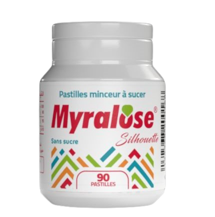
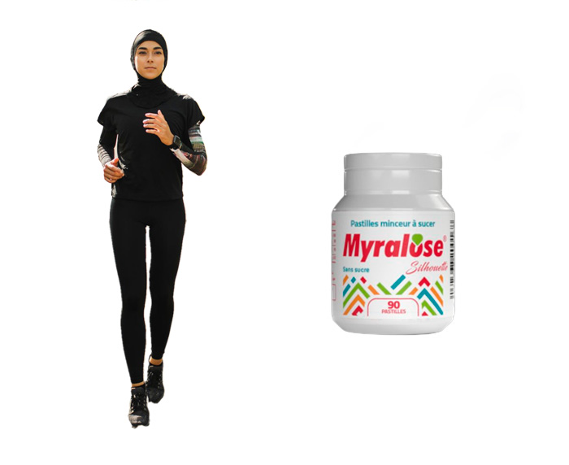
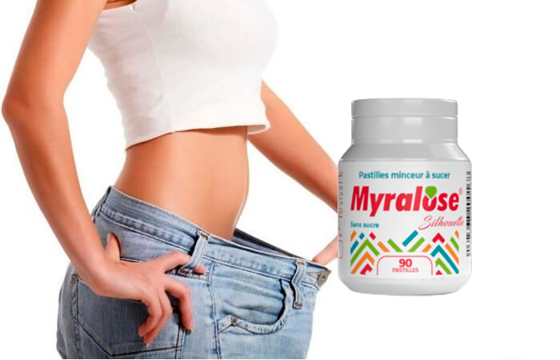

MYRALOSE هو تركيبة من التركيبات النشطة التي هي على استعداد وتعمل بنجاح لحرق الدهون. تحدد مكونات هذه الحبوب الحلوة مسار عمليات التمثيل الغذائي ، والشهية المعتدلة وتقليل الرغبة الشديدة في تناول الحلويات الضارة. بالإضافة إلى ذلك ، تعمل حبوب حلوة MYRALOSE كعامل منظف ، بحيث يتخلص الجسم من السموم ، و يحصل الشخص علي شخصية مثالية لفترة طويلة.
هل هذه حقيقة ام لا ؟
لحسن الحظ ، صناعة المكملات الغذائية الحديثة أدت إلي تقديم MYRALOSE لمساعدتنا علي إنقاص الوزن و الوصول الي الوزن المثالي و بضمان عدم عودة هذه الدهون مرة اخري . MYRALOSE يحارب هذا المنتج الوزن الزائد - في كثير من الأحيان ، تكون العملية طويلة ومرهقة. علي سبيل المثال أن : فقدان الوزن تحتاج إلى مراقبة نظامك الغذائي بعناية وتخصيص الكثير من الوقت للرياضة و الصالات الرياضية . يعتمد معدل فقدان الوزن على العديد من العوامل: عمر الشخص ، و معدل التمثيل الغذائي والحالة الصحية وقوة الإرادة وحتى الوزن ، فمن الأسهل تقليل الوزن لطالما لديك الفرصة لفعل ذلك بفضل هذه الحبوب الحلوة .
أيضًا ، يعد فقدان الوزن دائمًا ضغطً جسديا ونفسيا. النضال من أجل الجسد الجميل والجسد السليم هو أسلوب الحياة ، والانحراف عنه محفوف بخطورة عودة الكيلوجرامات الزائدة و الإصابة بالإكتئاب. يمكنك الحصول علي نظرة عامة على هذه الحبوب الحلوة الآن.
خصائص مفيدة
MYRALOSE ان أساس هذا المنتج هو مستخلصات ومقتطفات من النباتات التي تساهم في إنقاص الوزن ولها تأثير على الجسم ككل. مبدأ هذا المنتج هو تنشيط عمليات التمثيل الغذائي الطبيعية في الجسم وتسريع عملية التمثيل الغذائي تحل حبوب حلوة MYRALOSE عددًا من المهام المهمة جدًا. لذا ، فإن أخذ هذه الحبوب الحلوة تساعد على:
تحسين الشعور بالشبع مع كل وجبة. بسبب هذه الخاصية ، يتم تقليل كمية الطعام المطلوبة للشخص . نتيجةً لذلك ، يتم تقليل عدد السعرات الحرارية المستهلكة يوميًا ، الأمر الذي يؤثر بشكل مباشر على فقدان الوزن.
تقليل درجة امتصاص الكربوهيدرات الضارة ، مما يؤدي إلى تقليل دهون الجسم.
ما هي مكونات حبوب حلوة MYRALOSE ؟
احدي مكونات MYRALOSE هي : المكونات : جميع المكونات المتضمنة طبيعية وآمنة:
- مستخلص الزنجبيل - لديه القدرة على تهدئة الشعور بالجوع ، ويساعد على تسريع عملية التمثيل الغذائي.
- مستخلص التورين: يعزز تكسير الدهون في الجسم وتطبيع مستويات الكوليسترول في الدم.
- فيتامين ب 3 - يسرع عمليات التمثيل الغذائي ، ويعزز إنتاج المزيد من الطاقة ، وبالتالي يمنع الدهون والكربوهيدرات من دخول الجسم من التحول إلى دهون تحت الجلد.
- فيتامين ب 5 له تأثير ملين ، ويساعد على إزالة المواد السامة من الجسم التي تتراكم على جدران الأمعاء لسنوات ويبطئ عملية التمثيل الغذائي.
- فيتامين ب 6 يساعد على إزالة السوائل الزائدة من الجسم ، وبالتالي القضاء على التورم وتقليل احتمالية ظهور السيلوليت.
أسباب إستخدام حبوب حلوة MYRALOSE .
- زيادة الوزن.
- السيلوليت و عدم القدرة علي الحصول علي نشاط لجسمك بسبب الوزن الزائد .
- عدم تنظيم عملية التمثيل الغذائي و صعوبة فقد الدهون.
نصائح إستخدام MYRALOSE :
- خذ حبة او حبتين قبل كل وجبة , او عندما تشعر بالجوع .
- لا تتجاوز 6 حبوب إستحلاب في اليوم .
- لا ينصح به للرضاعة الطبيعية وللحوامل والأطفال دون سن 14 عامًا.
الفوائد الرئيسية
تختلف حبوب حلوة MYRALOSE عن المنتجات الطبية والتركيبات الغير مفيدة والعمليات الجراحية للتخسيس من حيث أنها تتمتع بأعلى كفاءة من كل ما سبق في فقدان الوزن بأمان :
- مناسب تمامًا للرجال والنساء الذين لم يتمكنوا من التخلص من الوزن المتراكم .
- مساعدتك على إنقاص الوزن دون الإمتناع عن نظام طعامك اليومي .
- تعطي هذه الحبوب نتيجة ملحوظة بعد 2-3 أسابيع من الاستخدام .
- لا تتطلب ممارسة الرياضة .
- لا إدمان اوالآثار الجانبية .
- تحسين التمثيل الغذائي وحرق الدهون بشكل طبيعي.
نتائج التجارب السريرية :
اجتاز المنتج MYRALOSE تجارب إكلينيكية: في خلال 4 أسابيع من الإستخدام ، فقد 78٪ من النساء 5-10 كيلوغرامات وتمكن 22٪ من التخلص من 1-5 كجم من الوزن الزائد. علاوة على ذلك ، دون استثناء ، كل الاشخاص اللذين إستخدموه أكدوا أن المنتج لا يسبب أي آثار جانبية على الإطلاق ، و لا يسبب إسهال ، لا يحدث غثيان ، والشهية منظمة بشكل صحيح .
كيف يمكنك شراء MYRALOSE ؟
حبوب حلوة MYRALOSE يتم تسليمها في جميع أنحاء الجزائر ، لذلك تحتاج إلى كتابة طلب عن طريق ملء نموذج الشراء بالأسفل , ثم سيتصل بك احد المختصين لتأكيد عنوان التوصيل والعدد المطلوب من دورات MYRALOSE ، وفي غضون أيام قليلة ستتلقى إشعارًا بإستلام MYRALOSE بالبريد .
رأي احد مستخدمين MYRALOSE :
سناء بن حمد
حبوب حلوة MYRALOSE هي مزيج فريد من المكونات ، وهي حل مثالي لأولئك الذين يريدون إنقاص الوزن دون الإضرار بالصحة. كما أوصي بهذا المنتج للأشخاص الذين يعانون من زيادة الوزن والسمنة ، حيث لن يكون هناك أي آثار سلبية على عكس التمارين البدنية التي يمكن أن تسبب مضاعفات في القلب في حالة وجود 30 كجم أو أكثر من الدهون الزائدة. تعتمد حبوب حلوة لـ MYRALOSE على حقيقة أنها تزيل جميع المواد الضارة وتبدأ في حرق الدهون. بمساعدتها ، يمكنك أيضًا الحفاظ على النتيجة بشكل فعال للغاية.
دفعتني الأوقات العصيبة إلى شراء حبوب حلوة MYRALOSE. كنت خائفة ، لكنني الآن لست نادمة على ذلك على الإطلاق ، خلال 3 أسابيع تخلصت من ما يصل إلى 11 كجم من الوزن الزائد وقمت بإرجاع نمط حياتي وحب الطعام.
لدي شخصية مثالية تقريبًا ، لكنني قررت التخلص من طبقة الدهون على بطني وإخترت MYRALOSE لهذا الغرض ، في غضون أيام قليلة ، خسرت 3 كيلوغرامات ، أصبحت البطن خالية من العيوب. وأنا لم امارس حتي التمارين الرياضية لذلك ، يا لها من حبوب رائعة!
في خلال 4 أشهر من الإستخدام تمكنت من التخلص من 25 كجم اللذين دائماً أزعجوني . الآن لقد تغيرت تمامًا ، فأنا أحب نفسي وأحصل على العديد من المجاملات . ماذا يمكنني أن أقول ، أبدو رائعة ، بفضل مبتكري هذا المنتج الرائع للنساء الجزائريات - هذه فرصة لتصبحين سعيدة بدون جهد.
كنت شبه يائسة من التخلص من 10-15 كجم من الوزن الزائد الذي لطالما كان يلاحقني. لكن مع هذه الحبوب الحلوة نجحت! احب MYRALOSE ، والآن سأستخدمها دائمًا للحفاظ على النتيجة. الأمر سهل معهم ولا توجد آثار جانبية.